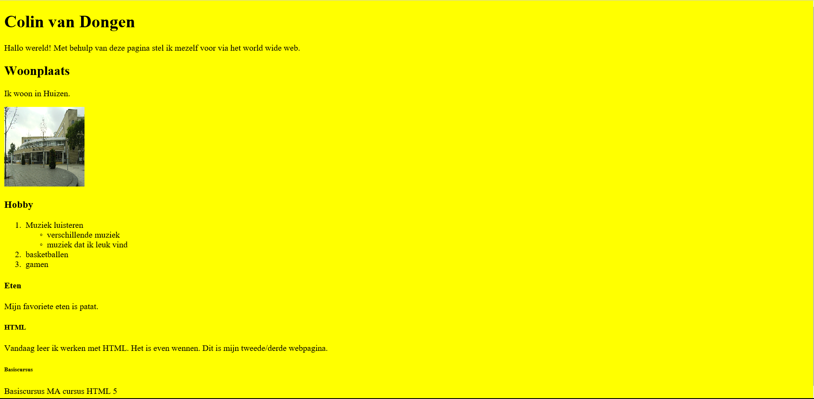

Ik laat hier stukjes zien van wat er online staat op ma-could.hosts van het vak fro
Dit word een pagina dat allemaal kleine stukjes van de vorige opdrachten heeft.
Dit doe ik om het anders te maken dan opdracht 6A.
De stukjes zijn alleen van het vak fro omdat er nog geen ander vak iets in zich heeft.
Deze opdrachten komen op volgorde deels erin:
In opdracht 1 kregen we de opdracht om de juiste html tags in het bestandje te doen.
Daarna moesten we er een plaatje in stoppen van onze woonplaats.
Bij opdracht 2 kregen we een website vol fouten dus moesten we met de validator(s) alle fouten eruit halen.
Bij opdracht 3 moesten we een knop maken dat een berichtje verstuurd.
We moesten ook ervoor zorgen dat je de tijd en datum op je pagina zag.
Opdracht 4 moesten we een navigatie balk maken en div blokken naast elkaar zetten.
Voor opdracht 5 moesten we een mini website maken met verschillende input type's.